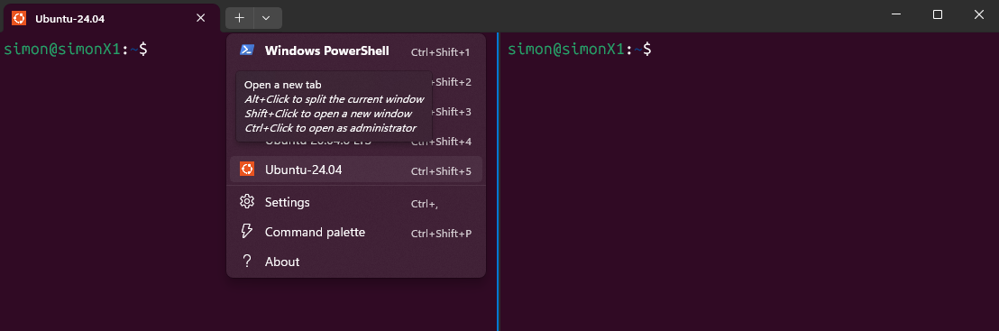
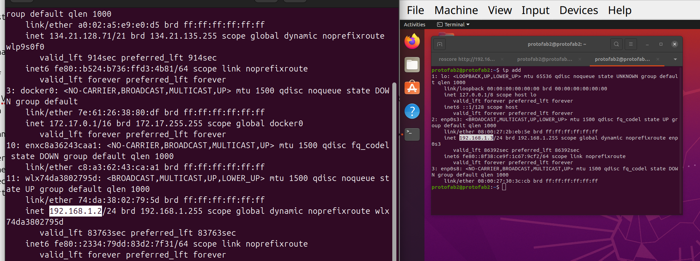
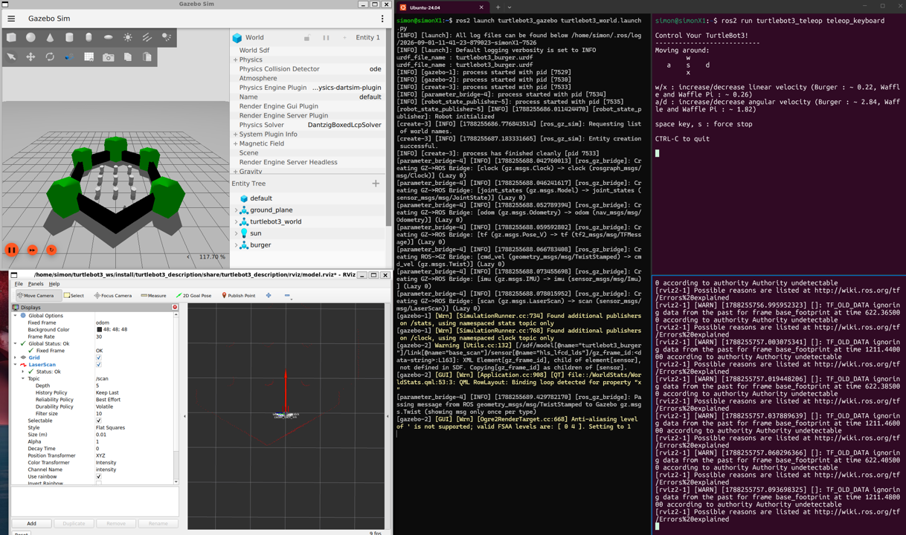

Introduction to ROS
Human-IST, ProtoFab, LearningLab, UniFR
ProtoFab assignment 1: ROS2 and Turtlebot3 Installation
Introduction
Robot Operating System (ROS) is an open-source framework that helps researchers and developers build and reuse code between robotics applications. Like most tools developed for robotics, it is mainly meant to work on Linux. Windows and macOS support are very limited and often dodgy.
In this document, we explain how to install Ubuntu 24.04 and ROS2, as well as the necessary packages to handle the Turtlebot3 robot that will be used for your project. The process should take about 30-60 minutes; mostly consisting in waiting for download and installation steps to complete. Hopefully, everything will go smoothly.
Please make sure you have everything installed and ready for next week as we will be starting to use these tools in the assignment #2 !
Important remarks:
HTML version of the assignments: We highly recommend using the HTML version of the assignments which are available on the Github of the course (link). With the HTML version, you can safely copy/paste commands directly in your Terminal. With the PDF version, copy/paste is not working so well.
For Native Linux users: you should not have much difficulty installing the system and running it. Make sure you use Ubuntu 24.04. If you wish to keep a more up-to-date distribution for your normal work, you can use virtualbox and install Ubuntu 24.04 on a VM (see below for instructions, but we do not recommend it).
For Windows users: there are several options available: dual boot (Windows, Linux), virtual machine or running Linux with Windows Subsystem for Linux (WSL2). WSL lets developers install a Linux distribution (such as Ubuntu, OpenSUSE, Kali, Debian, Arch Linux, etc) and use Linux applications, utilities, and Bash command-line tools directly from Windows, unmodified, without the overhead of a traditional virtual machine or dual-boot setup. On the downside, networking and access to hardware material connected to the machine is sometimes slightly trickier (access to USB ports, access to network, etc.) and will generally require some work around to work as expected. We strongly recommend using WSL2 to install Ubuntu on your machine, using the instructions below.
For Mac users: recent Macs have very limited compatibility with Linux. We apologize but there is not much you can do. UTM, Parallels or virtualbox might work but we have not tested and cannot provide support. Seems you can also install ROS2 Jazzy natively on macOS Mojave (10.14) link. But we have not tested and cannot provide any support. We havenot tested and cannot guarantee that Turtlebot3 packages will work on macOS.
For all: each ROS version is only guaranteed to be compatible with specific Linux distributions. We highly recommend that you use the versions indicated below to ensure compatibility with the future assignments. Please do not install ROS1 as it is very different from ROS2.
Note that we have tested and validated the future assignments of the course using the distribution mentioned below. We will not provide support for other versions. Therefore, we strongly suggest you install these exact versions:
Ubuntu 24.04 LTS
ROS2 Jazzy
Pre-requesites
- Basic knowledge of the Linux commands
Install Ubuntu on Windows
This section is specific for Windows users. You will install Ubuntu using WSL2. For Linux native users see next section
Requirements:
- You need Windows 10 or Windows 11 to use WSL2.
How to install Ubuntu on Windows using WSL2
You can follow the tutorial provided on this link below to install Ubuntu 24.04 LTS on Windows.
Note: You may potentially need to enable WSL pon your Windowes system, if not already done.
Once Ubuntu (24.04) has been successfully installed on your machine, you can start it from a Powershell terminal.
Open a Windows Powershell Terminal
Click on the little arrow on the top-menu and select Ubuntu to start a new terminal. You can start as many terminals as you want.
Hint: If you hold “Alt” while clicking on Ubuntu, the terminal will be split in multiple windows instead of creating a new tab (see screenshot below).

Finally, we strongly recommend that you set Ubuntu in mirrored mode. Doing so will ensure that you have the same network (IP) for both Ubuntu and your Windows OS. You can find more details on this link and this link.
To enable mirrored mode, create a <.wslconfig> file in your Windows home user directory (C:\Users\YourUserName) and insert the lines provided below in your file.
# Content of the .wslconfig file located in (C:\Users\YourUserName)
# Note that theses settings apply across all Linux distros running on WSL 2 (.wslconfig)
[wsl2]
networkingMode=mirrored Now restart your WSL (“wsl –shutdown” from a Powershell terminal) and finally start a new Ubuntu terminal. You can check if the operation was successful using the command below from your Ubuntu terminal (it should report “mirrored”).
[localpc-terminal] wslinfo --networking-modeInstall Ubuntu on Linux
This section is specific for Linux native users. You will install Ubuntu 24.04 as required for ROS2 using virtualbox.
Requirements:
- You need to install virtualbox
[localpc-terminal] sudo apt install virtualboxHow to install Ubuntu 24.04 on Linux using virtualbox
You can follow the tutorial provided on the link below to install Ubuntu 20.04 LTS on virtualbox:
Warning: the tutorial below is for the version 20.04, you just need to adapt it to install Ubuntu 24.04.
https://www.pragmaticlinux.com/2021/04/how-to-install-ubuntu-desktop-20-04-lts-in-virtualbox/
Once Ubuntu (24.04) has been successfully installed, you need to configure the network to share the connection with your host machine.
Open the VM Settings \(\rightarrow\) Network. You should have a default NAT adapter enabled
Enable a second adapter, choosing
Bridged Adapter'' and selecting the identifier of your wifi adapter (usually looking like wlxxxxx), expand theAdvanced’’ menu, selectAllow All'' for the Promiscuous Mode, and finally tick theCable Connected’’ box, and press OKOn your host machine, check your IP address
[localpc-terminal] ip add
Start your VM, check that your IP addpress has the same kind of value than the host. If you cannot get a connection, make sure you are indeed connected to the adpater through Devices \(\rightarrow\) Network \(\rightarrow\) Connect Network Adapter 2.
If you cannot establish a connection (make sure your host is connected to the wifi first), your wifi adapter might not allow it. To resolve this, follow these steps: 1. Insert a USB Wifi adapter (we can provide one) 2. Connect this adapter to the Wifi on the host machine 3. Select this adapter for the bridged adapter in the VM settings 4. Start your VM and check the IP address
Install and configure ROS2 Jazzy (with Turtlebot3)
Now that you have a working Ubuntu (24.04) on your machine, you can simply follow the instructions below to install ROS2 Jazzy and the necessary packages to manage the Turtlebot3 robot.
The instructions have been adapted/inspired from the official Turtlebot3 manual. If you look information from the official manual mentioned above, make sure you select the right ROS2 version: Jazzy (on the top of the page).
WARNING: it is important to use the right version of ROS2 (Jazzy) for the right version of Ubuntu (24.04), otherwise it is not guaranteed to work.
Let’s start
Set locale
[localpc-terminal] locale # check for UTF-8 [localpc-terminal] sudo apt update && sudo apt install locales [localpc-terminal] sudo locale-gen en_US en_US.UTF-8 [localpc-terminal]sudo update-locale LC_ALL=en_US.UTF-8 LANG=en_US.UTF-8 [localpc-terminal]export LANG=en_US.UTF-8 [localpc-terminal]locale # verify settingsEnable the required Universe repository
[localpc-terminal] sudo apt install software-properties-common [localpc-terminal] sudo add-apt-repository universeconfigure ROS 2 repositories for your system.
[localpc-terminal] sudo apt update && sudo apt install curl -y [localpc-terminal] export ROS_APT_SOURCE_VERSION=$(curl -s https://api.github.com/repos/ros-infrastructure/ros-apt-source/releases/latest | grep -F "tag_name" | awk -F'"' '{print $4}') [localpc-terminal] curl -L -o /tmp/ros2-apt-source.deb "https://github.com/ros-infrastructure/ros-apt-source/releases/download/${ROS_APT_SOURCE_VERSION}/ros2-apt-source_${ROS_APT_SOURCE_VERSION}.$(. /etc/os-release && echo ${UBUNTU_CODENAME:-${VERSION_CODENAME}})_all.deb" [localpc-terminal] sudo dpkg -i /tmp/ros2-apt-source.debInstall ROS development tools. On Ubuntu 24.04 default installation, your apt sources may only include the base noble suite. This can cause dependency conflicts when installing ros-dev-tools. Edit the file ‘/etc/apt/sources.list.d/ubuntu.sources’ (using code or nano). Then modify the line that declares the Suites to includes noble-updates and noble-backports as shown below. Note: you need to use sudo to edit the file.
[localpc-terminal] sudo code /etc/apt/sources.list.d/ubuntu.sourcesThe line in your file should looke like that:
Suites: noble noble-updates noble-backportsNow you can update your apt sources and install the ROS development tools.
[localpc-terminal] sudo apt clean && sudo apt update && sudo apt full-upgrade -y [localpc-terminal] sudo apt install ros-dev-toolsInstall ROS2
[localpc-terminal] sudo apt install ros-jazzy-desktopInstall ROS2 dependant packages
A. Gazebo sim packages
[localpc-terminal] sudo apt-get update [localpc-terminal] sudo apt-get install curl lsb-release gnupg [localpc-terminal] sudo curl https://packages.osrfoundation.org/gazebo.gpg --output /usr/share/keyrings/pkgs-osrf-archive-keyring.gpg [localpc-terminal] echo "deb [arch=$(dpkg --print-architecture) signed-by=/usr/share/keyrings/pkgs-osrf-archive-keyring.gpg] http://packages.osrfoundation.org/gazebo/ubuntu-stable $(lsb_release -cs) main" | sudo tee /etc/apt/sources.list.d/gazebo-stable.list > /dev/null [localpc-terminal] sudo apt-get update [localpc-terminal] sudo apt-get install gz-harmonicB. Cartographer packages
[localpc-terminal] sudo apt install ros-jazzy-cartographer [localpc-terminal] sudo apt install ros-jazzy-cartographer-rosC. Navigation2 packages
[localpc-terminal] sudo apt install ros-jazzy-navigation2 [localpc-terminal] sudo apt install ros-jazzy-nav2-bringupInstall TurtleBot3 Packages
[localpc-terminal] source /opt/ros/jazzy/setup.bash [localpc-terminal] mkdir -p ~/turtlebot3_ws/src [localpc-terminal] cd ~/turtlebot3_ws/src/ [localpc-terminal] git clone -b jazzy https://github.com/ROBOTIS-GIT/DynamixelSDK.git [localpc-terminal] git clone -b jazzy https://github.com/ROBOTIS-GIT/turtlebot3_msgs.git [localpc-terminal] git clone -b jazzy https://github.com/ROBOTIS-GIT/turtlebot3.git [localpc-terminal] git clone -b jazzy https://github.com/ROBOTIS-GIT/turtlebot3_simulations.git [localpc-terminal] sudo apt install python3-colcon-common-extensions [localpc-terminal] cd ~/turtlebot3_ws [localpc-terminal] colcon build --symlink-install [localpc-terminal] echo 'source ~/turtlebot3_ws/install/setup.bash' >> ~/.bashrc [localpc-terminal] source ~/.bashrcSetup your environment by adding the following lines to your “~/.bashrc” file and then finally source it to apply changes. Warning: You need to set the ROS_DOMAIN_ID to a value that is not used by other ROS2 nodes on your network. As you may all be working with your robot at the same time on the same netwrok, you need to use a unique ROS_DOMAIN_ID. We suggest using the ID of your Turtlebot as your ROS_DOMAIN_ID (ie. 101, 102, 103, etc.). But for now keep this ROS_DOMAIN_ID value to 30. You can always modify it later by editing your ‘.bashrc’ file.
[localpc-terminal] echo 'export ROS_DOMAIN_ID=30' >> ~/.bashrc [localpc-terminal] echo 'export TURTLEBOT3_MODEL=burger' >> ~/.bashrc [localpc-terminal] echo 'source /opt/ros/jazzy/setup.bash' >> ~/.bashrc [localpc-terminal] source ~/.bashrc
Hint: Once you installed everything, you can open your ‘~/.bashrc’ file to see what has been added at the bottom of the file. To edit your “~/.bashrc” file, you can either use the “nano” command line editor or use “code” if you prefer working with a GUI (“code” should open the Visual Studio Code installed on your Windows).
Go to your home directory and open your bashrc file
[localpc-terminal] cd ~ [localpc-terminal] code .bashrc or, in a single command [localpc-terminal] code ~/.bashrcYou must always source your bashrc file to apply changes. Source it on all your open terminals (if any open).
[localpc-terminal] source ~/.bashrc
Here are the lines I added in my own .bashrc file
# Added by SR to enable graphical library use for ROS1. Not sure if necessary anymore for ROS2.
export LIBGL_ALWAYS_SOFTWARE=1
## Added by SR (required export)
export ROS_DOMAIN_ID=101
export TURTLEBOT3_MODEL=burger
## Added by SR (integration of ros jazzy and turtlebot3 commands within terminal)
source /opt/ros/jazzy/setup.bash
source ~/turtlebot3_ws/install/setup.bashFor your personal knowledge: What is a bashrc file? It is an important script that allows users(and geeks) to customize their Bash shell environment on Linux systems. The .bashrc file is your personal script that automatically configures your environment every time you open a new terminal window, enabling personalization through aliases, functions, environment variables and command execution.
Quick Test
To verify the success of your installation, you can start the following commands. Note that each command must be run in a distinct terminal. You should be able to see the turtlebot simulation as illustrated in the figure below. Running the simulaation can slow down your computer, so make sure you have a good machine to run it.
In a first terminal, start the simulation of the Turtlebot3 robot in Gazebo. You should see a window with a turtlebot3 robot in an empty world.
[localpc-terminal-1] ros2 launch turtlebot3_gazebo empty_world.launch.py use_sim_time:=trueAlternatively, you may also use the command below to start a world with some obstacles (walls, boxes, etc.) instead of an empty world.
[localpc-terminal-1] ros2 launch turtlebot3_gazebo turtlebot3_world.launch.pyIn a second terminal, start teleop to operate the robot. You should now be able to move the robot using “awsdx” keys on your keyboard. (To move, the focus must be set on the teleop terminal)
[localpc-terminal-2] ros2 run turtlebot3_teleop teleop_keyboardIn a third terminal, you can optionnally start rviz to visualize the robot and its sensors. You should see a window showing the robots and the lidar sensors readings (in red).
[localpc-terminal-3] ros2 launch turtlebot3_bringup rviz2.launch.py
